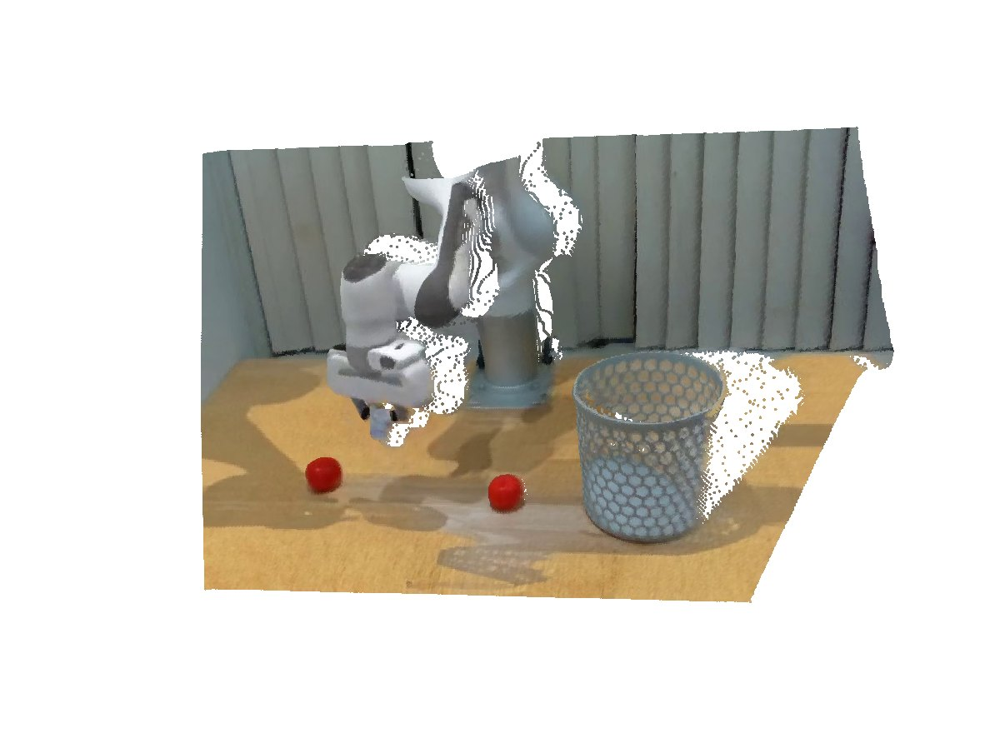

GEM-4D
Geometry-Enhanced Video World Models for Robot Manipulation
A geometry-grounded video world model that distills dense 4D correspondence supervision into the video backbone during training, and converts the resulting rollouts into executable robot trajectories — at zero additional inference cost.
1Harvard AI and Robotics Lab, Harvard University 2Media Lab and EECS, MIT 3Computer Science, Princeton University 4MIT-IBM Watson AI Lab
* Equal contribution as first authors † Joint supervision

Loading the 3D rollout...
Plausible futures.Consistent geometry.
A rollout that looks right is not yet one you can act on.
Video world models rarely keep the same physical point consistent across frames. GEM-4D distills dense 4D correspondence from a frozen geometry model into the video backbone during training, then drops that branch at inference.
What comes out is consistent enough to act on. An inverse dynamics system reads 6-DoF trajectories straight off the rollout, closing the loop from a language instruction to a real arm with no task-specific training.


Side-by-side comparison
Qualitative 4D scene generation on Droid, RLBench, Bridge and RT-1. TesserAct generates plausible RGB but produces inconsistent depth; GEM-4D preserves geometric structure across frames, yielding cleaner depth and tighter object boundaries. In 3D, dragging one panel turns all three.
Prompt —
Appearance and geometry, measured
RGB reconstruction, depth reconstruction and point correspondence, on a real dataset and a simulated one. GEM-4D leads every column.
| RGB | Depth | Points | Tracking | ||||||
|---|---|---|---|---|---|---|---|---|---|
| Domain | Method | FVD ↓ | SSIM ↑ | PSNR ↑ | AbsRel ↓ | δ1 ↑ | δ2 ↑ | Chamfer ↓ | δvisavg ↑ |
| Real (Droid) | CogVideoX | 35.56 | 75.91 | 20.18 | 22.33 | 68.32 | 83.17 | 0.2670 | 66.22 |
| Wan 2.2-14B | 33.43 | 76.24 | 20.70 | 21.39 | 71.18 | 84.35 | 0.2349 | 68.18 | |
| TesserAct | 33.28 | 75.66 | 20.08 | 22.07 | 66.80 | 82.60 | 0.2630 | 67.14 | |
| Geometry-Forcing | 33.17 | 76.12 | 20.53 | 21.96 | 69.74 | 83.83 | 0.2443 | 67.97 | |
| GEM-4D | 31.82 | 82.05 | 21.11 | 20.13 | 78.19 | 88.21 | 0.2001 | 71.23 | |
| Simulated (RLBench) | CogVideoX | 40.21 | 75.51 | 20.03 | 15.41 | 70.99 | 92.90 | 0.2913 | 58.32 |
| Wan 2.2-14B | 49.20 | 73.01 | 19.87 | 17.81 | 67.07 | 90.16 | 0.1762 | 61.99 | |
| TesserAct | 41.97 | 76.72 | 19.71 | 16.02 | 69.26 | 93.03 | 0.1813 | 61.15 | |
| Geometry-Forcing | 34.06 | 77.92 | 19.48 | 15.34 | 68.96 | 92.80 | 0.1488 | 60.84 | |
| GEM-4D | 27.94 | 80.27 | 23.36 | 14.11 | 74.13 | 95.01 | 0.0702 | 68.18 | |
Bold = best, underlined = second best. Std. dev. across 20 generations is 1–2%.
From a rollout to a real robot arm
From an initial observation, through GEM-4D-predicted future frames, to executed UF arm actions — the inverse dynamics system extracts the policy from the rollout without any task-specific training.
Does the rollout actually work
Real-robot success is scored by a 15-participant human study on Droid; the RLBench figures come from replaying the extracted trajectories in the simulator.
| Droid · real robot | RLBench · simulator | |||||||||
|---|---|---|---|---|---|---|---|---|---|---|
| Method | AUTOLab | CLVR | RAIL | Lift Numbered Block | Put Rubbish In Bin | Reach Target | Lamp On | Pick Up Cup | Slide Block To Target | Solve Puzzle |
| CogVideoX | 49 | 64 | 39 | – | – | – | – | – | – | – |
| TesserAct | 58 | 65 | 59 | 21 | 0 | 2 | 36 | 49 | 18 | 33 |
| GEM-4D | 75 | 83 | 87 | 78 | 75 | 82 | 67 | 81 | 80 | 63 |
Success rate in %. Bold = best, underlined = second best. CogVideoX has no RLBench numbers: most of its rollouts could not be processed into a trajectory at all. TesserAct's inverse dynamics is not public, so its rollouts were run through ours.
Citation
Please cite the preprint if GEM-4D supports your research.
@article{zhou2026gem4d,
title = {GEM-4D: Geometry-Enhanced Video World Models for Robot Manipulation},
author = {Zhou, Kaichen and Chen, Yuzhen and Zhan, Fangneng and Hua, Hang and
Chen, Grace and Chang, Xinhai and Qu, Ao and Du, Yilun and
Liu, Zhuang and Liang, Paul Pu and Wang, Mengyu},
journal = {arXiv preprint arXiv:2605.22882},
year = {2026}
}